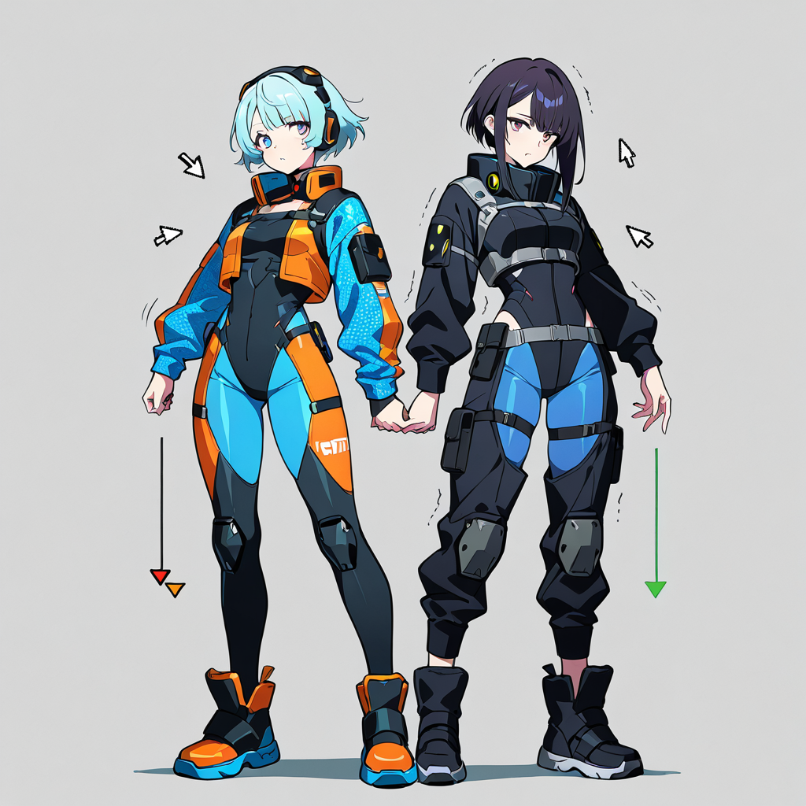

[Prompt]
(masterpiece, best quality:1.2), 2girls, standing opposite, shaking hands, 1girl, (HTML-themed techwear:1.3), angle bracket patterns on clothes, orange and blue color scheme, web code motifs, glowing syntax accents, detailed fabric, 1girl, (Cursor editor-themed outfit:1.3), dark sleek cyberpunk fashion, purple and blue gradient, glowing cursor arrow symbol, minimalist UI clothing details, anime style, highly detailed, dynamic pose, soft lighting, clean background
[Negative Prompt]
(worst quality, low quality:1.4), extra limbs, bad anatomy, bad hands, missing fingers, extra digits, text, watermark, signature, ui overlay, screen glare, deformed, poorly drawn face, mutation, blurry, 3d, realistic, photorealistic, nsfw, fused characters, merged clothes
